Artist
Hamon Alipour
- Born1991
- FromArdebil, Iran
- Works16
- Dated2015–2016
StatementAbout the work
Human are being in saving different kinds of image that sometimes some of these images are meaningful within especial concept for him so that it takes place in his mind and takes his time.
Man has two options on his way either he just see the image and creates it in his mind or comes back to the dream and take place for that image in his dream. Therefore there will be several objects surround him and he will make a connection with them. These subjects will create images on his mind as he is looking for himself on self. He is searching past in the present to create his wanted image perhaps on self. In the present which each image will show its paradisiacal concept larger.
My image furthermore in lieu of feeling and romantic features present somethings different. The explaining is standing in front of impression.
The multilayer situation of work allows for explaining therefore it will make unknown current. He is following past revolution with the perfect mind and thought to make his way to continue work.
Hamon Alipour
Works16 artworks


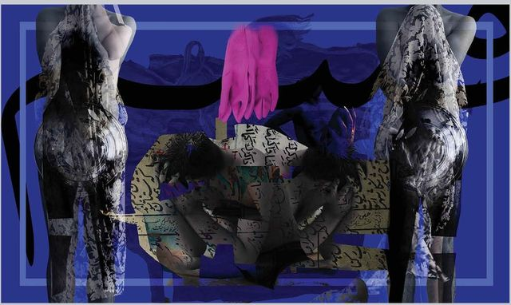

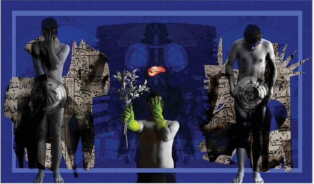

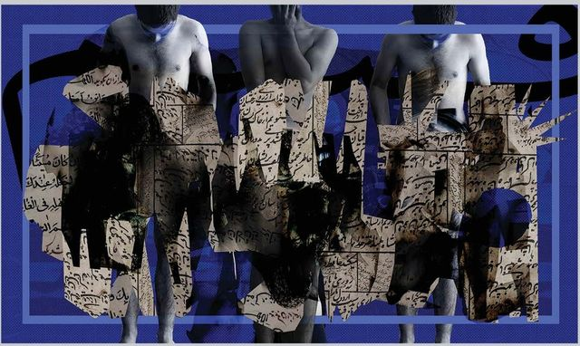

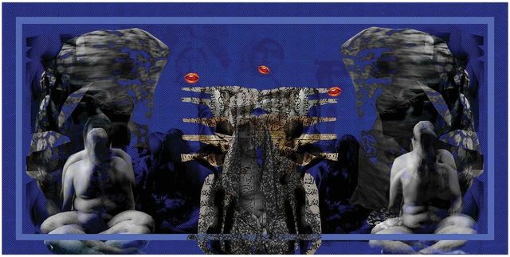

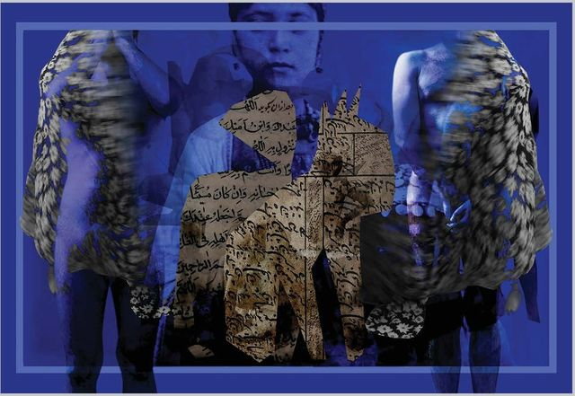

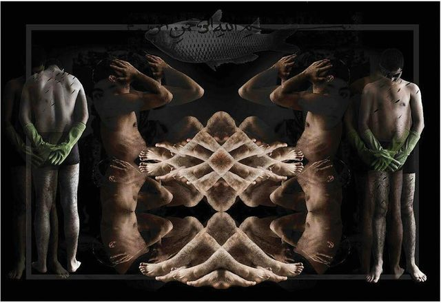

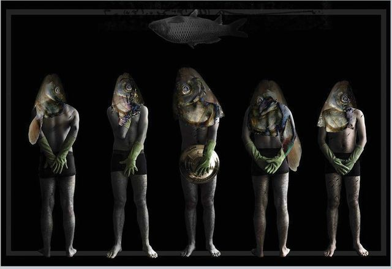

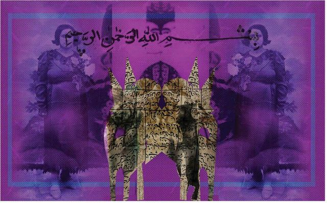

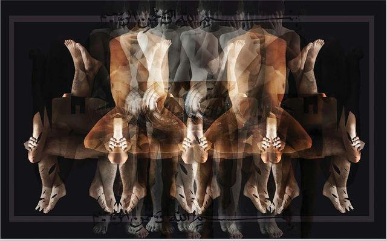

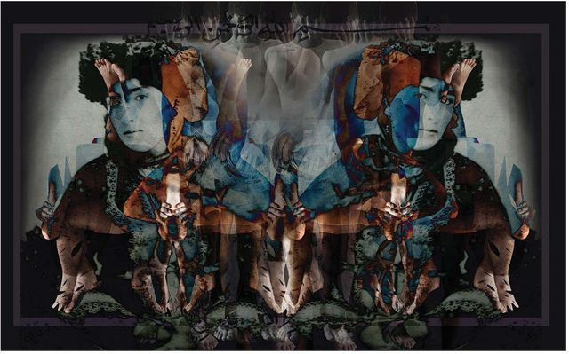

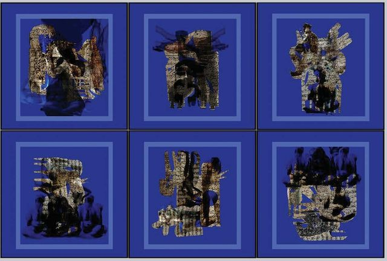

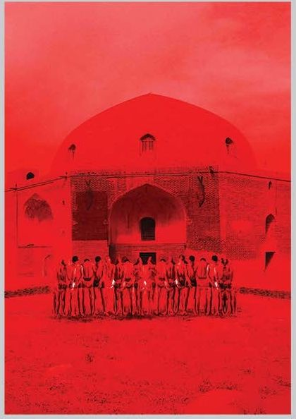

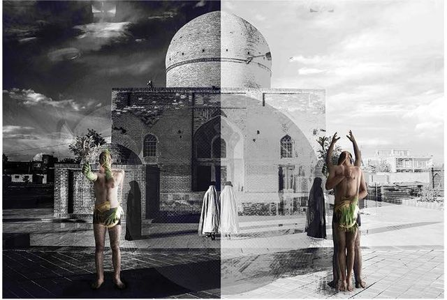

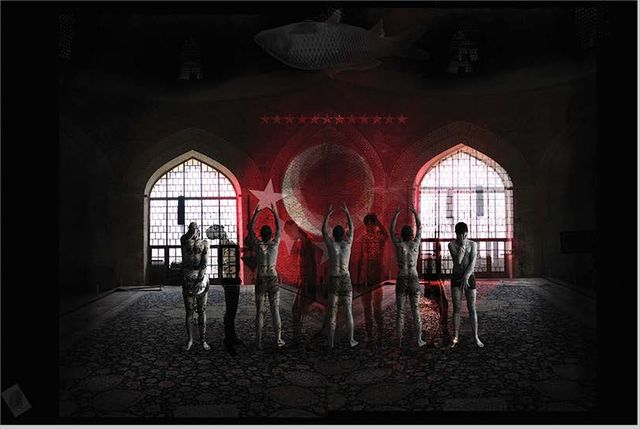

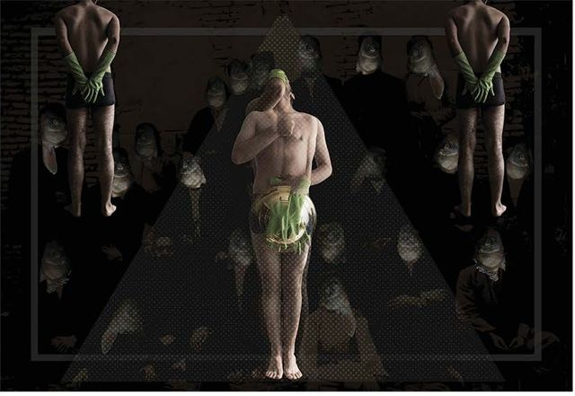
History of experienceBiography · education · exhibitions · awards
Education
- BA in painting, art and architecture University|Tehran – Iran
- M.A in painting, art and architecture University|Tehran – Iran
Activities
- Selective work in thirteen of two years picture Exaptation, contemporary art Museum|Tehran – Iran
- Access of work to the small tableau Exhibition due to painting special week, Saba|Tehran – Iran
- Exhibition conductor by the name of Ali Daei world football champion, Fadak cultural & art assembled|Ardebil – Iran
- Participation in modernist painters Exhibition, Fadak|Ardebil – Iran
- Work access to the young country selected Festival Exhibition, Fadak|Ardebil – Iran
- Participation in the modernist painter s Exhibition, Soureh|Tehran – Iran
- Access of work to the two years selective Iran painting Exhibition, Saba|Tehran – Iran
- Access of work to the selective Fajr festival Exhibition, contemporary art Museum|Tehran – Iran
- And participation in the group Exhibition in Tehran-Ardebil-Tabriz
Source: the Sobhan Gallery artist catalogue “Hamoon Alipoor.pdf”.